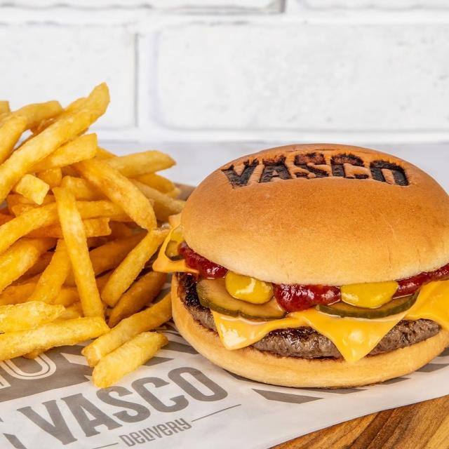
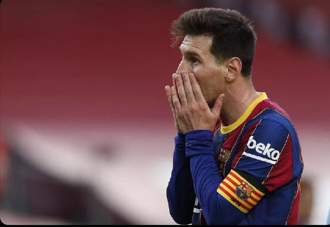
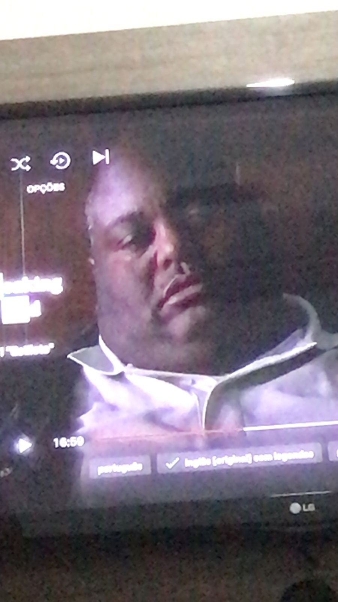

BEM VINDO!
Data de nascimento da página:
14 de março de 2023
Essa página foi criada com o intuito de mostrar um pouco de mim para o mundo,Aproveite! Aqui você encontrará curiosidades sobre mim e muito mais.
POR QUE SOU VASCO?
sou vasco desde quando me entendo por gente, e muito disso vai do meu e pai e do meu irmão, que também são vascainos, e me ensinaram a amar esse clube de futebol.
CURIOSIDADE:
1. A faixa diagonal na camisa vascaína significa o caminho para as Índias, descoberto pelo navegador Vasco da Gama.
2. Também começou como clube de remo: 58 amigos se uniram para participar da grande regata de 1898, ano da Comemoração do IV Centenário da Descoberta do Caminho Marítimo para as Índias.
3. Em sua estreia no futebol, dia 3 de maio de 1916, o Vasco levou uma impiedosa goleada de 10 x 0 contra o Paladino F.C..
4. O primeiro escudo do Vasco foi criado em 1903. Era redondo, fundo negro, com a caravela ao centro. No fundo negro, as iniciais C e R, mais Vasco da Gama, separados por 6 cruzes de Cristo. Apenas na década de 1920 o clube adotou o atual escudo.
5. O Vasco aceitava em seu quadro associativo negros, mulatos, caixeiros e comerciantes, gente que não era admitida em outros clubes de futebol.
CURIOSIDADES SOBRE MIM
Meu nome é Danniel, sim, com dois "enes", não me pergunte o porque, pergunte à minha mãe.
CURIOSIDADES:
1.Um dos meus maiores medos é insetos.
2.A minha menor nota na escola foi 1, em um aprova valendo 10.
3.Eu nasci em Angra dos Reis, em um bairro pequeno de lá.
4.Sempre gostei muito de futebol, desde pequeno, e quando jogava sempre fui zagueiro matador.
5.Eu ja ralei o nariz na praia, com um tombo por calsa das ondas, e dei de cara na areia.
MINHAS SÉRIES FAVORITAS
Aqui listarei as minhas series favoritas.
SÉRIES:
1.The Walking Dead
2.Breaking Bed
3.Bojack Horseman
4.How to Get Away with Murder
5.The Good Place
SOBRE MIM

Nome: Danniel Lopes da Costa
Data de Nascimento: 04/06/2005
Altura: 178cm
Peso: 75kg
Time do Coração: CLUBE DE REGATAS VASCO DA GAMA
Posts Populares

